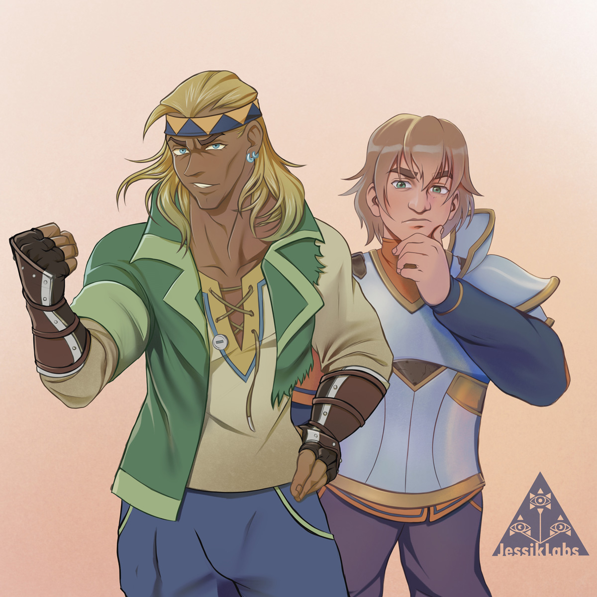
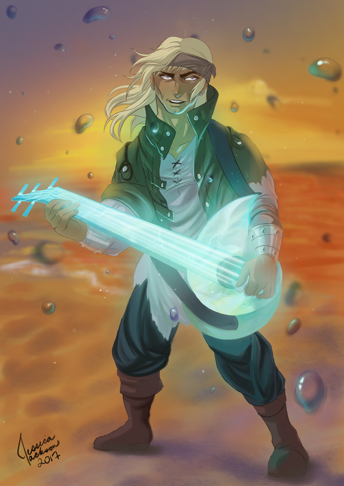
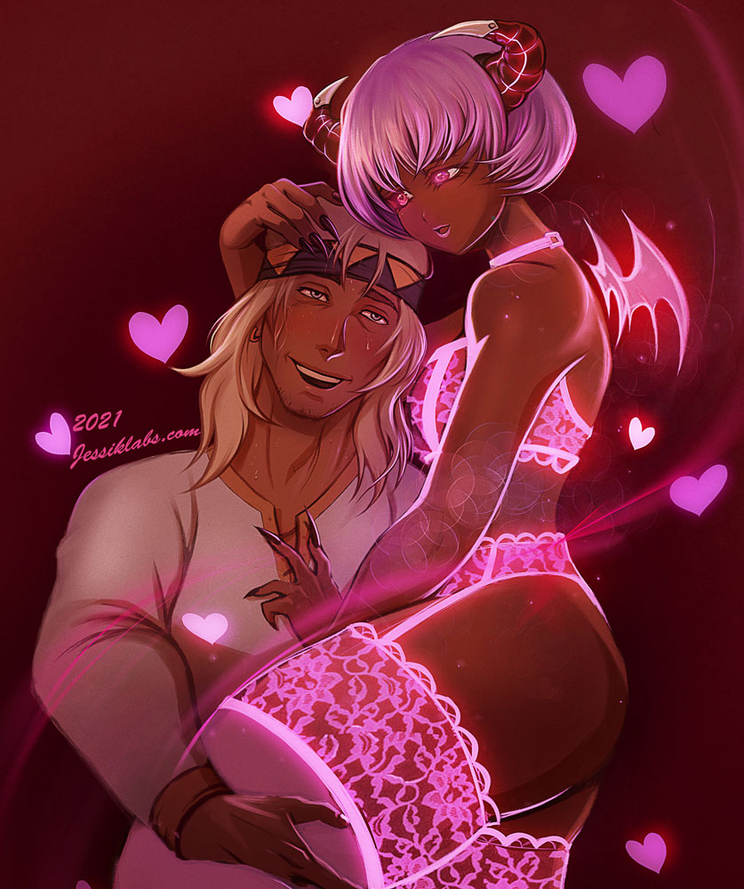
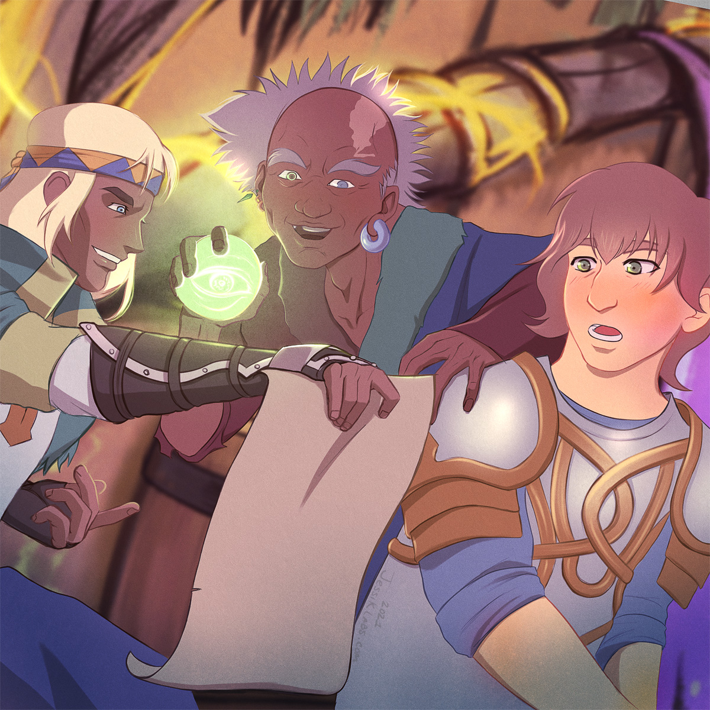
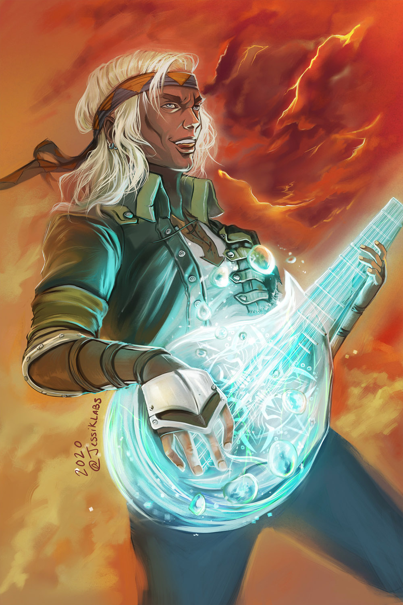
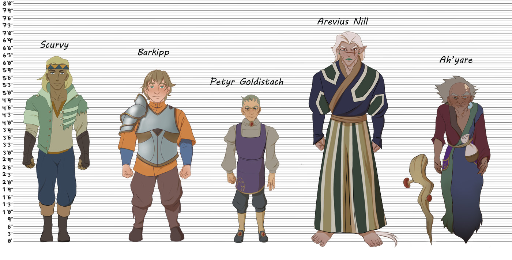
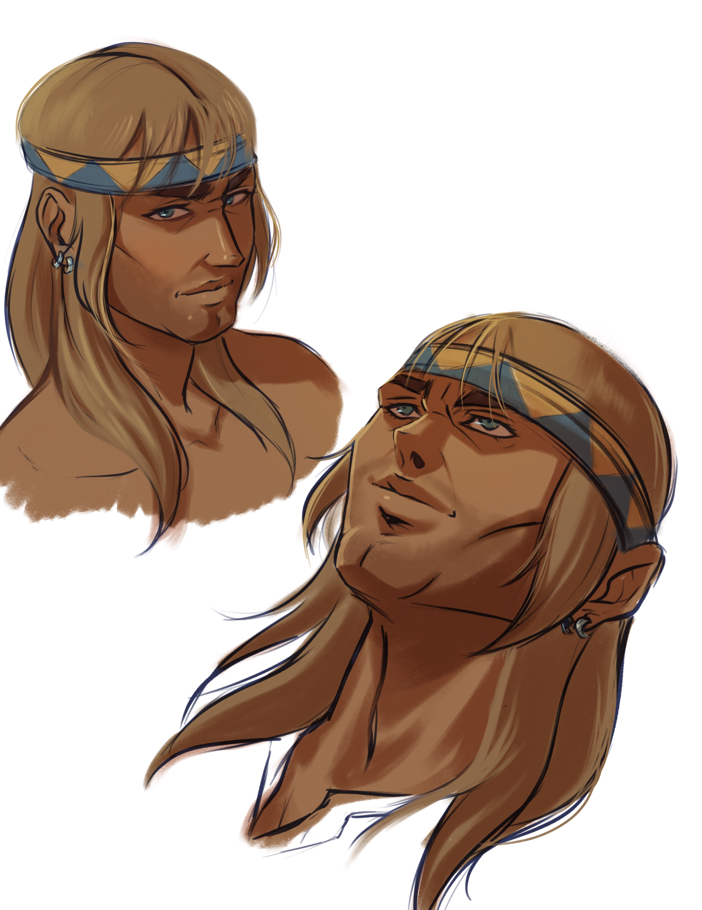
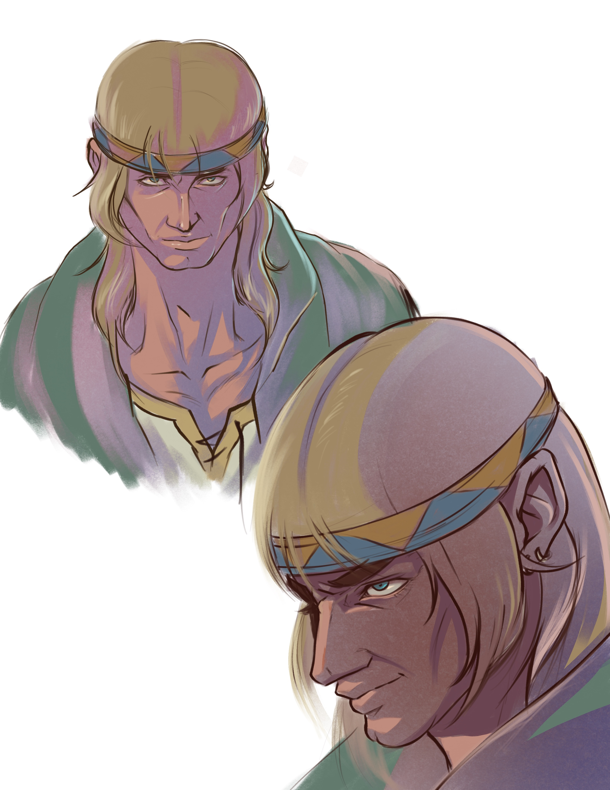
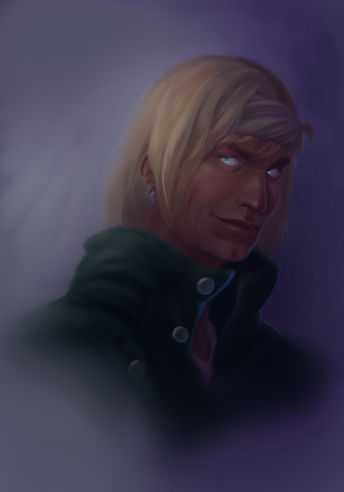
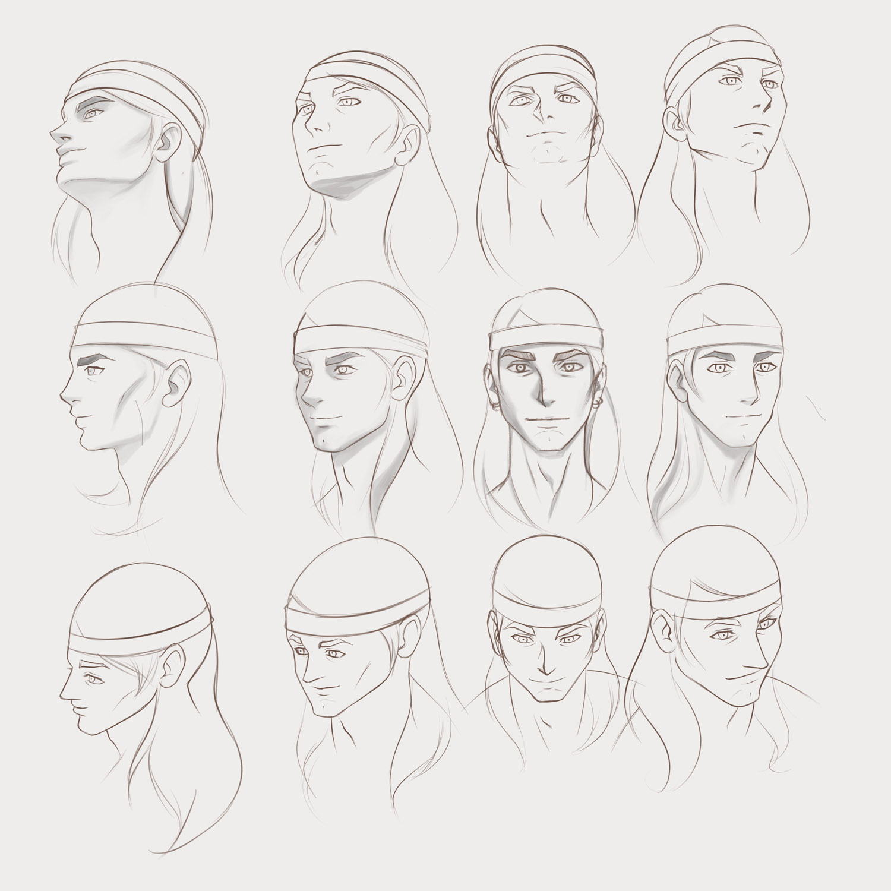

Welcome to the Sword & Board!

Profile
Name: Scurvy
Age: 42
Height: 6'2"
Race: Human
Birthplace: Port of Acknar
Element: Water
Other Aliases: None
Personality
• Patient
• Somewhat cautious
• Reserved, but friendly
• Laid back with a serious streak
• Loud if intoxicated; likes to sing
• Enjoys gambling, games of chance, and succubi
• Still has a taste for heists
• Adventurous
Allies & Associations
Barkipp
Ah'yare
Embra Din
Shallot
The Adventurer's Guild
History
Born in the Port of Acknar to parents he never knew, Scurvy spent much of his childhood orphaned. Intense storms often rock the port city, leaving many of the poorer inhabitants missing or dead. Scurvy ended up in one of the many orphanages, where he and other children were treated as props to make the orphanage money. When he was ten years old, several other orphans attempted an escape. Scurvy took advantage of the confusion they caused and escaped himself.
For the next year he lived as a street urchin, stealing when he could and helping petty criminals for food. He was particularly small due to malnourishment which made him quite good at getting into buildings, allowing him to let criminals inside. Though he had some success, the first year was struggle, until he met the wizard Ah’Yare.
While pickpocketing the wizard, Scurvy was caught by a pocket octopus. Ah’Yare was amused and taught the young urchin to better survive the streets. With the knowledge that “Get strength with meats and weak with sweets” and a few more tricks, Scurvy began to grow, get stronger, and live overall better on the streets. He continued to stay in touch with Ah’Yare periodically over the next few years.
At fourteen he was severely injured when much of the Port of Acknar was destroyed in a battle between Ah’Yare and bounty hunters. Feeling bad about causing a fatal injury to a child he had been helping, Ah’Yare performs illegal magical surgery. Scurvy is saved by a water elemental implant, which also makes him a target to certain organizations. To help him avoid these groups, Ah’Yare sends Scurvy to the Adventurer’s Guild, where he will be protected.
Adventuring was not the life for Scurvy, so he arranges to join a pirate crew. During his time as a pirate he eats magical meats and fruits, growing from a malnourished child into a strong man. His first crew betrays him and sells him into slavery, where Scurvy stays for five years. He eventually joins other prisoners in an escape, and then joins their crew. He retires from them after a decade to rejoin the Adventurer’s Guild, so that he can fulfill new dreams.
Two years in, at thirty-six he meets Ah’Yare again and joins the Sword&Board, where he works and resides to this day.














×